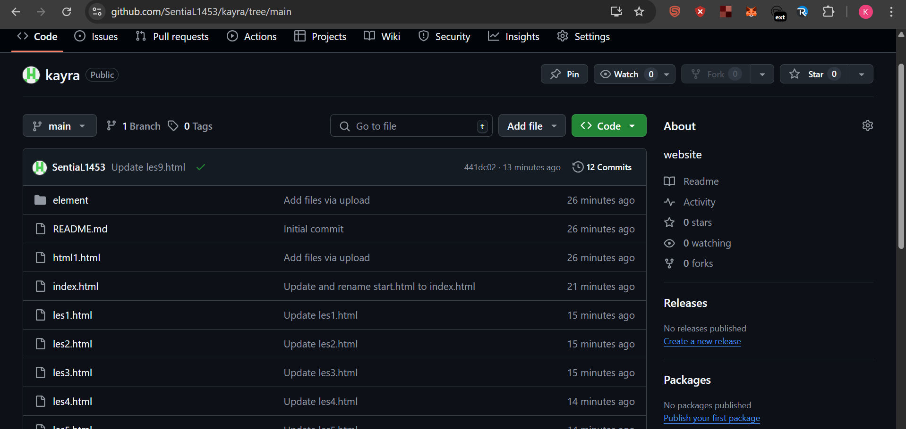
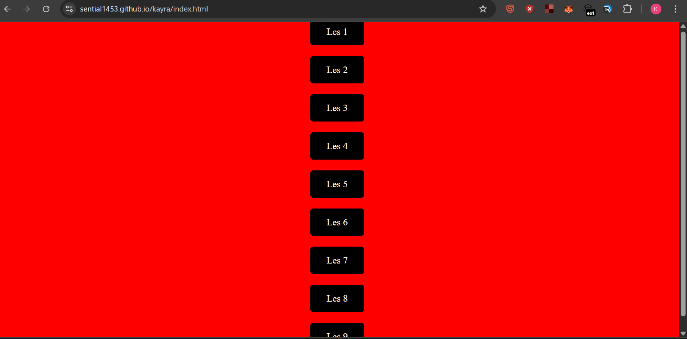

We hebben deze cursus online gezet via GitHub.
De weergave van mijn bestanden op GitHub.
De afbeelding van de startpagina van mijn website.
Dit was onze laatste les en het was echt een onvergetelijke ervaring. Aan het begin van de les was er alleen een scherm en een paar regels tekst. Maar na verloop van tijd leerden we HTML, maakten we het mooier met CSS en lanceerden we onze eigen echte website. En dat hebben we allemaal samen gedaan. Het was leuk om als groep te werken. We hielpen elkaar, wisselden ideeën uit en losten problemen samen op. Soms maakte iemand een fout, dan corrigeerde een ander die. Soms raakte iemand gemotiveerd en sleepte hij ons allemaal mee. We hebben echt teamgeest ervaren. Een van de leukste momenten was zeker de les waarin we met een drone vlogen. Op dat moment straalde de blijdschap van het doen van iets anders dan normaal uit op ieders gezicht. Dat blijft een mooie herinnering. Het programmeerproces was leuker dan we hadden gedacht. Hoewel het in het begin verwarrend leek, raakten we er na verloop van tijd aan gewend en begonnen we het leuk te vinden naarmate we meer leerden We weten nu hoe websites worden gemaakt en dat heeft ons zelfvertrouwen gegeven Dit is de laatste les, maar eigenlijk is het de deur naar een nieuw begin Misschien zullen we ooit grotere projecten uitvoeren Misschien was dit slechts de eerste stap Maar wat er ook gebeurt, deze klas en deze les zullen altijd een speciale plek in ons hart innemen